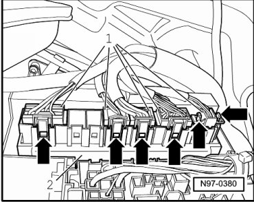
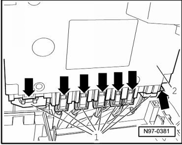

Power Distribution Module: Service and Repair
Vehicle Electrical System Control Module
• If control module is being replaced, first perform work procedure --> [ Vehicle Electrical System Control Module, Coding ] Programming and Relearning.
Removing
- Switch off ignition, switch off all electrical consumers and remove ignition key.
- Remove lower storage compartment on driver side --> Body Interior 68 Removal and Installation.
• The number of multi-pin harness connectors - 1 - at Vehicle Electrical System Control Module (J519) can deviate from the illustration depending on vehicle equipment.

- Release locking mechanisms of multi-pin harness connectors - arrows - and disconnect multi-pin harness connectors - 1 - from Vehicle Electrical System Control Module (J519) - 2 -.
- Remove Vehicle Electrical System Control Module (J519) - 2 - with wires connected to rear side out of bracket.
- Release locking mechanisms of multi-pin harness connectors - arrows - and disconnect multi-pin harness connectors - 1 - from Vehicle Electrical System Control Module - 2 -.

- Remove Vehicle Electrical System Control Module (J519) from vehicle.
Installing
Install in reverse order of removal.